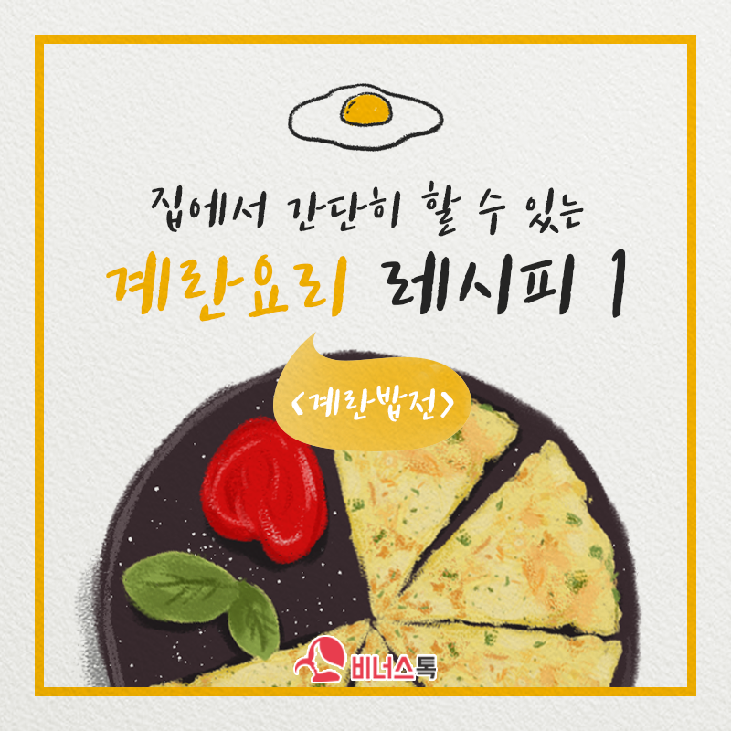

<!--
  Generated template for the MypagePage page.

  See http://ionicframework.com/docs/components/#navigation for more info on
  Ionic pages and navigation.
-->
<ion-header>
    <ion-navbar>
      
    <button ion-button menuToggle color="grapefruit">
      <ion-icon name="md-menu"></ion-icon>
    </button>
    <ion-title>
      마이페이지
    </ion-title>
        <ion-buttons end padding>
            <small class="point">0</small>
            
        </ion-buttons>
    </ion-navbar>
  </ion-header>


<ion-content no-padding>
    <ion-card>

        <ion-item>
          <ion-avatar item-start>
            
          </ion-avatar>
          <h2>김영미(정회원)</h2>
          <p>10590 포인트</p>
        </ion-item>
    </ion-card>
    <ion-card>
    <ion-list>
        <ion-item>
          <ion-icon color="primary" name="card" item-start></ion-icon>
            구매내역
          <ion-icon color="mis-grey" name="ios-arrow-forward-outline" item-end></ion-icon>
        </ion-item>
        <ion-item>
            <ion-icon color="primary" name="ios-cart" item-start></ion-icon>
              장바구니
              <ion-icon color="mis-grey" name="ios-arrow-forward-outline" item-end></ion-icon>
        </ion-item>
        <ion-item>
            <ion-icon color="primary" name="md-heart-outline" item-start></ion-icon>
              찜한상품
            <ion-icon color="mis-grey" name="ios-arrow-forward-outline" item-end></ion-icon>
        </ion-item>
      </ion-list>
    </ion-card>
</ion-content>
